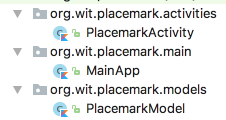
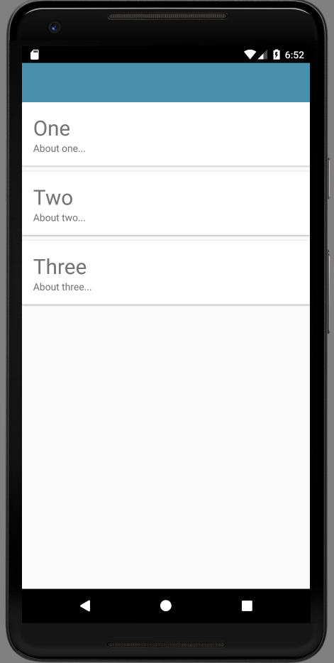
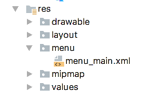
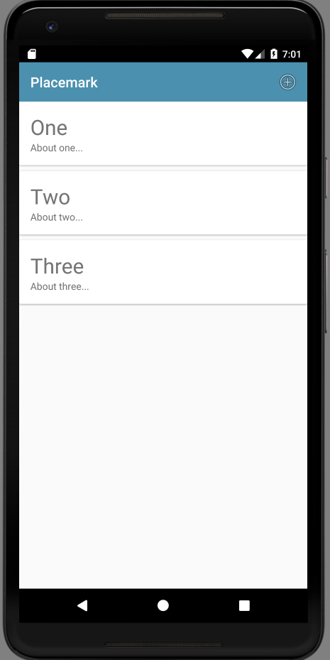

Objectives
Introduce new activity to display a list of placemarks. Support adding to this list.
Exercises Solutions
Exercise 1:
Download, expand and open in Studio the sample solution above. Run it in the emulator.
Exercise 2:
Make sure you can auto import the correct libraries when you introduce referenced. As an exercise, delete all of the imports from PlacemarkActivity:
Exercise 3
Create an ArrayList of Placemarks in PlacemarkActivity - and add each new activity to this list.
Log all placemarks when a new one is entered.
HINT: Here is a simple placemark array declaration + creation:
val placemarks = ArrayList<PlacemarkModel>()Solution
Even if you solved the problem - try this version:
class PlacemarkActivity : AppCompatActivity(), AnkoLogger {
var placemark = PlacemarkModel()
val placemarks = ArrayList<PlacemarkModel>()
override fun onCreate(savedInstanceState: Bundle?) {
super.onCreate(savedInstanceState)
setContentView(R.layout.activity_placemark)
btnAdd.setOnClickListener() {
placemark.title = placemarkTitle.text.toString()
if (placemark.title.isNotEmpty()) {
placemarks.add(placemark)
info("add Button Pressed: $placemarkTitle")
placemarks.forEach { info("add Button Pressed: ${it.title}")}
}
else {
toast ("Please Enter a title")
}
}
}
}Look carefully at this statement:
placemarks.forEach { info("add Button Pressed: ${it.title}")}What is going on here? This is another example of a Kotlin lambda - this time as a parameter to a forEach function associated with a collection. Review these posts here to get a general feel for how to manipulate collections effectively:
- https://antonioleiva.com/functional-programming-android-kotlin-lambdas/
- https://antonioleiva.com/collection-operations-kotlin/
(You may need to bookmark them and come back to them later)
Run the app with this solution - do you notice anything strange? You should see the every time we add a new placemark, we seem to log out the same value for all entries added. This is because we are only ever creating a single placemark :
var placemark = PlacemarkModel()Try this version of the add method instead:
placemarks.add(placemark.copy())Run again now and check the logs - each entry should be added now as expected.
Exercise 4:
Create new text field description + log when entered. This will require you to:
- and a new field in the layout
- add a new entry in the strings.xml file
- expend the model
- recover the field in the event handler and include in the model objects
- log the new field
Solution
strings.xml
...
<string name="hint_placemarkDescription">Description </string>
...activity_placemark.xml
...
<android.support.design.widget.TextInputEditText
android:id="@+id/description"
android:layout_width="match_parent"
android:layout_height="wrap_content"
android:layout_margin="8dp"
android:hint="@string/hint_placemarkDescription"
android:inputType="text"
android:maxLength="25"
android:maxLines="1"
android:padding="8dp"
android:textColor="@color/colorPrimaryDark"
android:textSize="14sp"/>
...Make sure to put this into the correct context.
PlacemarkModel.kt
data class PlacemarkModel(var title: String = "",
var description: String = "")PlacemarkActivity.kt
...
placemark.description = description.text.toString()
...Again, make sure to put this into the correct context.
MainApp
Create a new package called org.wit.placemark.main, and introduce this class:
MainApp
package org.wit.placemark.main
import android.app.Application
import org.jetbrains.anko.AnkoLogger
import org.jetbrains.anko.info
class MainApp : Application(), AnkoLogger {
override fun onCreate() {
super.onCreate()
info("Placemark started")
}
}The package structure should look like this:

In addition, change the AndroidManifest to specifically reference this class:
AndroidManifest.xml
...
<application
android:name="org.wit.placemark.main.MainApp"
...A single instance of this class will be created when our application will be launched. A reference to this application can be acquired in other activities as needed.
Run the app now, and verify that the log message is being generated.
We can now put the placemarks in to this class:
MainApp
class MainApp : Application(), AnkoLogger {
val placemarks = ArrayList<PlacemarkModel>()
override fun onCreate() {
super.onCreate()
info("Placemark started")
}
}... and we can adjust PlacemarkActivity to use this list instead of the one we had created in PlacemarkActivity:
class PlacemarkActivity : AppCompatActivity(), AnkoLogger {
var placemark = PlacemarkModel()
var app : MainApp? = null
override fun onCreate(savedInstanceState: Bundle?) {
super.onCreate(savedInstanceState)
setContentView(R.layout.activity_placemark)
app = application as MainApp
btnAdd.setOnClickListener() {
placemark.title = placemarkTitle.text.toString()
placemark.description = description.text.toString()
if (placemark.title.isNotEmpty()) {
app!!.placemarks.add(placemark.copy())
info("add Button Pressed: $placemarkTitle")
app!!.placemarks.forEach { info("add Button Pressed: ${it}")}
}
else {
toast ("Please Enter a title")
}
}
}
}Null Safety
Notice the the reference to the MainApp object:
var app : MainApp? = nullHow it is initialised:
app = application as MainAppand how it is used:
app!!.placemarks.add(placemark.copy())
info("add Button Pressed: $placemarkTitle")
app!!.placemarks.forEach { info("add Button Pressed: ${it}")}There is liberal use of ? and !! in this code. This is an example of Null Safety in action in Kotlin. A key feature of Kotlin - (see point 2 a few pages down):
A more detailed outline here
lateinit
Sometimes, we which to override null safety checks - particularly if we are certain that the reference will in fact be initialised. Replace MainApp now with this version:
PlacemarkActivity
class PlacemarkActivity : AppCompatActivity(), AnkoLogger {
var placemark = PlacemarkModel()
lateinit var app : MainApp
override fun onCreate(savedInstanceState: Bundle?) {
super.onCreate(savedInstanceState)
setContentView(R.layout.activity_placemark)
app = application as MainApp
btnAdd.setOnClickListener() {
placemark.title = placemarkTitle.text.toString()
placemark.description = description.text.toString()
if (placemark.title.isNotEmpty()) {
app.placemarks.add(placemark.copy())
info("add Button Pressed: $placemarkTitle")
app.placemarks.forEach { info("add Button Pressed: ${it}")}
}
else {
toast ("Please Enter a title")
}
}
}
}The changes an be seen in these lines:
lateinit var app : MainApp
...
app = application as MainApp
...
app.placemarks.add(placemark.copy())
...
app.placemarks.forEach { info("add Button Pressed: ${it}")}
...This is using the lateint qualifier. See this short discussion here:
PlacemarkList
We need a new Activity to present a list of placemarks - PlacemarkListActivity. Introducing a new view usually requires at lest the following:
- a layout
- a class
- a reference to the class in AndroidManifest.xml
Here are the these three artifacts:
activity_placemark_list.xml
<?xml version="1.0" encoding="utf-8"?>
<android.support.design.widget.CoordinatorLayout
xmlns:android="http://schemas.android.com/apk/res/android"
xmlns:app="http://schemas.android.com/apk/res-auto"
xmlns:tools="http://schemas.android.com/tools"
android:layout_width="match_parent"
android:layout_height="match_parent"
tools:context="org.wit.placemark.activities.PlacemarkListActivity">
<android.support.design.widget.AppBarLayout
android:layout_width="match_parent"
android:layout_height="wrap_content"
android:background="@color/colorAccent"
android:fitsSystemWindows="true"
app:elevation="0dip"
app:theme="@style/ThemeOverlay.AppCompat.Dark.ActionBar">
<android.support.v7.widget.Toolbar
android:id="@+id/toolbarMain"
android:layout_width="match_parent"
android:layout_height="wrap_content"
app:titleTextColor="@color/colorPrimary"/>
</android.support.design.widget.AppBarLayout>
</android.support.design.widget.CoordinatorLayout>PlacemarkListActivity
package org.wit.placemark.activities
import android.support.v7.app.AppCompatActivity
import android.os.Bundle
import org.wit.placemark.R
import org.wit.placemark.main.MainApp
class PlacemarkListActivity : AppCompatActivity() {
lateinit var app: MainApp
override fun onCreate(savedInstanceState: Bundle?) {
super.onCreate(savedInstanceState)
setContentView(R.layout.activity_placemark_list)
app = application as MainApp
}
}Notice in the above, we are retrieving and storing a reference to the MainApp object (for future use).
AndroidManifest.xml
This is the current version:
<?xml version="1.0" encoding="utf-8"?>
<manifest xmlns:android="http://schemas.android.com/apk/res/android"
package="org.wit.placemark">
<application
android:name="org.wit.placemark.main.MainApp"
android:allowBackup="true"
android:icon="@mipmap/ic_launcher"
android:label="@string/app_name"
android:roundIcon="@mipmap/ic_launcher_round"
android:supportsRtl="true"
android:theme="@style/AppTheme">
<activity android:name=".activities.PlacemarkActivity">
<intent-filter>
<action android:name="android.intent.action.MAIN"/>
<category android:name="android.intent.category.LAUNCHER"/>
</intent-filter>
</activity>
</application>
</manifest>This is a revised version -
<?xml version="1.0" encoding="utf-8"?>
<manifest xmlns:android="http://schemas.android.com/apk/res/android"
package="org.wit.placemark">
<application
android:name=".main.MainApp"
android:allowBackup="true"
android:icon="@mipmap/ic_launcher"
android:label="@string/app_name"
android:roundIcon="@mipmap/ic_launcher_round"
android:supportsRtl="true"
android:theme="@style/AppTheme">
<activity android:name=".activities.PlacemarkActivity">
</activity>
<activity android:name=".activities.PlacemarkListActivity">
<intent-filter>
<action android:name="android.intent.action.MAIN"/>
<category android:name="android.intent.category.LAUNCHER"/>
</intent-filter>
</activity>
</application>
</manifest>Look carefully at the differences - we have included a new entry:
<activity android:name=".activities.PlacemarkListActivity">
...
</activity>and also, this entry is marked as the main activity:
...
<intent-filter>
<action android:name="android.intent.action.MAIN"/>
<category android:name="android.intent.category.LAUNCHER"/>
</intent-filter>
...Run the app now - you should see the (blank) PlacemarkListActivity
Card + RecyclerView
To display a list of Placemarks, we will make use of these components:
- CardView
- RecyclerView
- RecyclerViewAdapter
Orchestrating these three is now a familiar patterns in Android development. It is covered briefly in this article here:
This is worth a quick read before proceeding.
CardView
CardView itself is supported by a library - which must be included now:
build.gradle
...
implementation 'com.android.support:cardview-v7:28.0.0'
...Here is the cardview itself:
card_placemark.xml
<?xml version="1.0" encoding="utf-8"?>
<android.support.v7.widget.CardView
xmlns:android="http://schemas.android.com/apk/res/android"
android:layout_width="match_parent"
android:layout_height="wrap_content"
android:layout_marginBottom="8dp"
android:elevation="24dp">
<RelativeLayout
android:layout_width="match_parent"
android:layout_height="wrap_content"
android:padding="16dp">
<TextView
android:id="@+id/placemarkTitle"
android:layout_width="wrap_content"
android:layout_height="wrap_content"
android:layout_alignParentTop="true"
android:textSize="30sp"/>
<TextView
android:id="@+id/description"
android:layout_width="wrap_content"
android:layout_height="wrap_content"
android:layout_below="@id/placemarkTitle"/>
</RelativeLayout>
</android.support.v7.widget.CardView>When you rebuild the project, you should be able to view the card in design view.
We can insert the cards into the activity_placemark_list layout - by introducing a RecyclerView widget like this:
activity_placemark_list.xml
...
<android.support.v7.widget.RecyclerView
android:id="@+id/recyclerView"
android:layout_width="match_parent"
android:layout_height="match_parent"
android:scrollbars="vertical"
app:layout_behavior="@string/appbar_scrolling_view_behavior"/>
...This is to be inserted just before the closing tag.
RecyclerView + Adapter
With these resources in place - the PlacemarkListActivity can be reworked to include the RecyclerView + adapter:
PlacemarkListActivity
package org.wit.placemark.activities
import android.support.v7.app.AppCompatActivity
import android.os.Bundle
import android.support.v7.widget.LinearLayoutManager
import android.support.v7.widget.RecyclerView
import android.view.LayoutInflater
import android.view.View
import android.view.ViewGroup
import kotlinx.android.synthetic.main.activity_placemark_list.*
import kotlinx.android.synthetic.main.card_placemark.view.*
import org.wit.placemark.R
import org.wit.placemark.main.MainApp
import org.wit.placemark.models.PlacemarkModel
class PlacemarkListActivity : AppCompatActivity() {
lateinit var app: MainApp
override fun onCreate(savedInstanceState: Bundle?) {
super.onCreate(savedInstanceState)
setContentView(R.layout.activity_placemark_list)
app = application as MainApp
val layoutManager = LinearLayoutManager(this)
recyclerView.layoutManager = layoutManager
recyclerView.adapter = PlacemarkAdapter(app.placemarks)
}
}
class PlacemarkAdapter constructor(private var placemarks: List<PlacemarkModel>) : RecyclerView.Adapter<PlacemarkAdapter.MainHolder>() {
override fun onCreateViewHolder(parent: ViewGroup, viewType: Int): MainHolder {
return MainHolder(LayoutInflater.from(parent?.context).inflate(R.layout.card_placemark, parent, false))
}
override fun onBindViewHolder(holder: MainHolder, position: Int) {
val placemark = placemarks[holder.adapterPosition]
holder.bind(placemark)
}
override fun getItemCount(): Int = placemarks.size
class MainHolder constructor(itemView: View) : RecyclerView.ViewHolder(itemView) {
fun bind(placemark: PlacemarkModel) {
itemView.placemarkTitle.text = placemark.title
itemView.description.text = placemark.description
}
}
}The app should run now - but will still be blank. In MainApp, we can add some test placemarks to test out the Recycler machinery:
MainApp
...
override fun onCreate() {
super.onCreate()
info("Placemark started")
placemarks.add(PlacemarkModel("One", "About one..."))
placemarks.add(PlacemarkModel("Two", "About two..."))
placemarks.add(PlacemarkModel("Three", "About three..."))
}
...
Menu & Actionbar
In order to trigger the creation of Placemarks, we need some menu/action mechanic on our home screen. This will be provided by supporing a button/menu an action bar along the top of the PlacemarkListActivity.
First a new string resource:
stings.xml
<string name="menu_addPlacemark">Add</string>Then a new menu resource:
menu_main.xml
<?xml version="1.0" encoding="utf-8"?>
<menu xmlns:android="http://schemas.android.com/apk/res/android"
xmlns:app="http://schemas.android.com/apk/res-auto">
<item
android:id="@+id/item_add"
android:icon="@android:drawable/ic_menu_add"
android:title="@string/menu_addPlacemark"
app:showAsAction="always"/>
</menu>The above resource must be in its own folder:

In the PlacemarkListActivity onCreate method, we must enable the action bar (and give it a title):
PlacemarkListActivity
...
toolbarMain.title = title
setSupportActionBar(toolbarMain)
...... and then override the method to load the menu resource:
...
override fun onCreateOptionsMenu(menu: Menu?): Boolean {
menuInflater.inflate(R.menu.menu_main, menu)
return super.onCreateOptionsMenu(menu)
}
...This gives us a single button on the action bar:

This is the stock icon we are using is
android:icon="@android:drawable/ic_menu_add"This is drawn from this set:
These can change with each release of Android - a comprehensive set of all drawable resources is available here:
Action Implementation
Review this general introduction to App Bar/toolbars here:
We need to respond to the button press - triggering the launch of the PlacemarkActivity:
PlacemarkListActivity
override fun onOptionsItemSelected(item: MenuItem?): Boolean {
when (item?.itemId) {
R.id.item_add -> startActivityForResult<PlacemarkActivity>(0)
}
return super.onOptionsItemSelected(item)
}This implements the menu event handler - and if the event it item_add, we start the PlacemarkActivity.
We are using the anko intent library:
In this case we are starting an 'intent' inside our own application. The intent systems in Android is more general than this - and we can trigger intents serviced by other applications.
Indeed, we expose an intent to permit one of our activities to be launched.
Run the app now - and add an activity:
- what happens when add activity is pressed?
- what happens when you press the
backbutton from AddActivity?
Clearly we are not quite finished yet. In PlacemarkActivity, we need to explicitly finish() the activity - and set a result code:
...
if (placemark.title.isNotEmpty()) {
app.placemarks.add(placemark.copy())
info("add Button Pressed: $placemarkTitle")
app.placemarks.forEach { info("add Button Pressed: ${it}")}
setResult(AppCompatActivity.RESULT_OK)
finish()
}
...This should end the PlacemarkActivity - and update the List view.
We can remove the test placemarks from MainApp now:
override fun onCreate() {
super.onCreate()
info("Placemark started")
// placemarks.add(PlacemarkModel("One", "About one..."))
// placemarks.add(PlacemarkModel("Two", "About two..."))
// placemarks.add(PlacemarkModel("Three", "About three..."))
}Solution
Placemark application so far:
Exercise 1: Sample Solution
Make sure you can download and run the sample solution (archive above)
Exercise 2: Cancel Button
Incorporate new 'Cancel' action into PlacemarkActivity. This should return to PlacemarkListActivity without adding a new Placemark.

Follow the steps 05 & 06 in this lab as a guide to doing this. Remember, you will be introducing the menu/action into PlacemarkActivity.
Exercise 3: Refactor PlacemarkAdapter to its own source file.
The PlacemarkAdapter class is currently in the same source file as the PlacemarkListActivity class. For clarity and ease of maintenance, move this into its own source file.